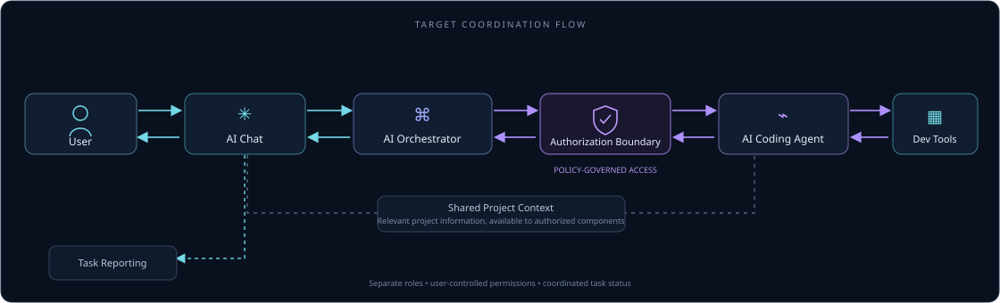

Foundation
AI-Assisted Game Development
Support a human-led workflow for building Android and iOS games with Godot and AI.
Independent project / In development
A locally hosted Windows application designed to coordinate AI-assisted mobile game development, software engineering, and local task automation through a unified workspace.
01 / Overview
WindowsAgent is a private, local project by an independent developer. Its primary focus is creating mobile games for Android and iOS with Godot and AI assistance.
The wider workspace is being shaped to bring project work, AI collaboration, and carefully bounded Windows tasks together in one place.
02 / Capabilities
Planned capabilities are presented as direction, not as a promise of autonomous execution.
Support a human-led workflow for building Android and iOS games with Godot and AI.
Bring planning and review together with a separate AI coding agent for implementation tasks.
Organize project work and task context within the local application foundation.
Keep relevant project information available across work sessions, with user control.
Explore bounded local automation for diagnostics and routine development tasks.
Shape execution around explicit permissions, isolated credentials, and clear user oversight.
03 / Architecture
The target design separates reasoning from implementation and places a controlled boundary around execution.

Handles planning, reasoning, and review.
Designed to coordinate task progress and reports automatically.
Handles implementation and development tasks within the allowed scope.
Policies govern access to execution capabilities and local tools.
This is a target architecture. Individual components have been synthetically checked; automatic end-to-end interaction is still under development and is not enabled.
04 / Security & privacy
Security principles guide development, while implementation and verification continue. No production security certification is claimed.
Designed to keep the application and project workflow on the user's device.
Keep authentication material separate from ordinary project content.
Sensitive operations should require user-controlled permission.
AI requests and local actions are intended to stay within defined limits.
Fallback to paid services is not intended to happen automatically.
05 / Project status
WindowsAgent is an active independent project and remains under development.
Active DevelopmentPrivate local project; not publicly distributed.
CurrentProject and chat foundationsLocal project and chat foundations implemented.
ImplementedAI provider integrationPrepared and synthetically tested.
Synthetic checksReal AI authenticationPending eligibility and security verification.
PendingAutonomous agent executionUnder development and not currently enabled.
Not enabledSign in with ChatGPT integration is being evaluated through official OpenAI mechanisms. No partnership or approval has been granted at this time.